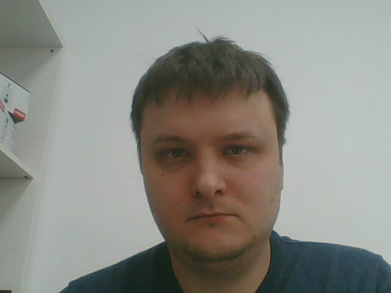

Лавров Сергей Валентинович
Мужчина, 34 года, родился 23 января 1987
О себе
На протяжении почти 15 лет я поддерживал сервера, ПК пользователей и сети предприятий. Обслуживаемые компании росли вместе с моими навыками. Я вложил много труда и времени в их развитие. Но я привык всегда двигаться дальше. Я нешел интересный и довольно объемный курс по программированию на Pyhton и JavaScript. В результате я многому научился, по новому посмотрел на работу. Как и должно, пришло понимание, что я знаю слишком мало. Я ищу работу, где смогу научиться новому и помочь в создании чего то полезного. Есть ИП. Права категории B. Женат. Двое детей.
Опыт работы
В данный момент являюсь ведущим системным администратором АН Владис. В мои задачи входит поддержка работоспособности сетей и техники организации в 6 городах и 12 офисах (МСК, НН, Владимир, Ковров, Королев и Краснодар). Поддержка IP атс и колцентра.
После переезда в новое здание организовал работу локальной сети. Настроил систему электронного документооборота АИС ГИТ. Занимался настройкой и ремонтом ПК. Обслуживал около 30-40 машин. Работал по свободному графику.
Монтировал системы видеонаблюдения, СКС, миниАТС. Работал в команде квалифицированных специалистов, получил богатейший опыт программирования систем связи. Часто выезжал в командировки по области. Во время работы получил сертификат LG-Nortel: установка и программирование миниАТС ariaSOHO и ipLDK 60/100/300. К сожалению во время кризиса заказы резко сократились, поэтому уволился.
Также занимался поддержкой компьютеров и оргтехники, за период работы организовал СКС в удаленном офисе продаж (4 рабочих места) и связь по шифрованному VPN каналу между головным и удаленным офисом. Установил и запрограммировал миниАТС в удаленном офисе и перепрограммировал миниАТС в головном (получил при это богатейший опыт общения с LG GDK-16). Работал по гибкому графику.
Контакты
+7 (920) 907-57-07
sergeylavroff@gmail.com
Telegram: @gonewxl
Образование
2004-2009 Владимирский государственный университет ФРЭМТ, Инженер по специальности радиосвязь, радиовещание и телевидение
Курсы
- 2022
Skillfactory. Fullstack Python Developer - 2018
Mikrotik Courses. ИП Борисов Андрей Александрович, MTCNA - 2015
ГК "АртКом" Специалист по установке и программированию станций LG eMG-80 - 2009
MГК "АртКом" Специалист по установке и программированию станций LG ipLDK 60/100/300 - 2004
Гимназия №23 Помощник технического переводчика (англ. яз.)
Уровни владения языками
- Русский: родной
- Английский: B2 intermediate
- Французский: A1 beginner